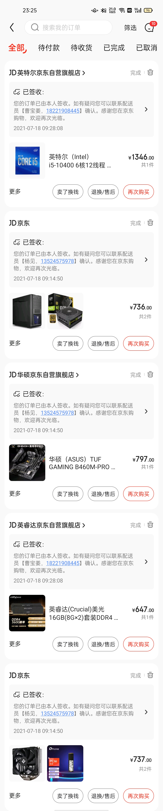
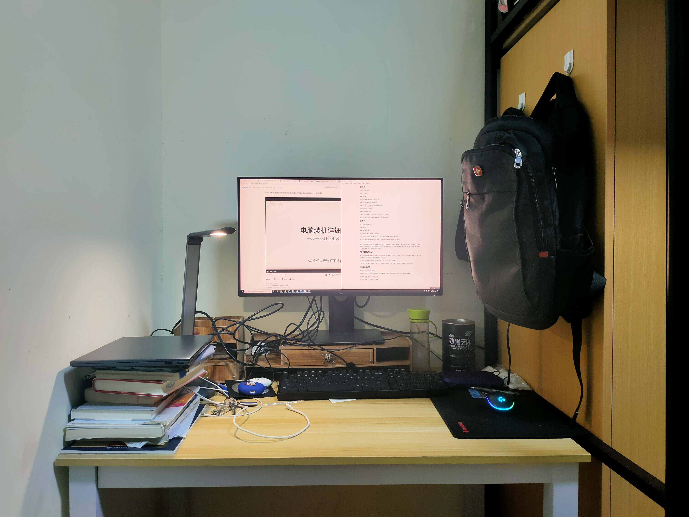
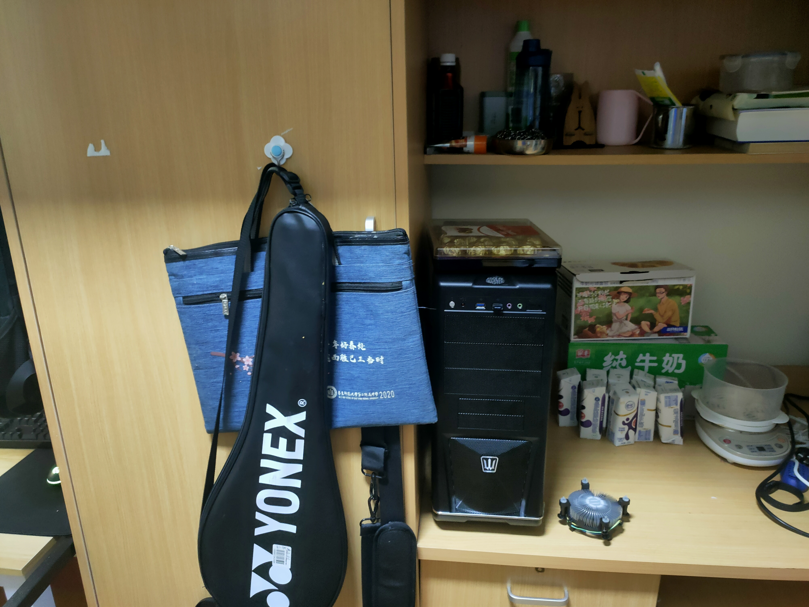

35_Blog
本文最后更新于：2021年7月18日 晚上
第一次装电脑
上一篇blog的内容怎么说呢。。啊，有很强的感情色彩，我觉得我也不是很清楚，稀里糊涂的
这是一篇算是技术向的blog吧，如果是一篇随记的blog，我现在没有这么充沛的情感
电脑的配置
我一共给我妈报了三个配置，本来一开始想的是“天哪，这电脑不上配置一还能算是电脑吗？”
但这个电脑算是给我妈配的，我是用它来练练手，当然很长一段时间可能都是我在用，所以我又列了配置二和配置三
配置一
CPU： R7 5800X
主板: B550
显卡: 后面再说，也可以买一个亮机卡
内存：科赋 雷霆 DDR4 3600 8G×2
固态：浦科特M9P PLUS 1T
电源：安钛克HCG850
机箱：联力 双子座 黑
散热：利民 冰封幻境EX 360水冷
3569 + 689 + 1099 + 899 + 599 + 599 = 7454
评：败家啊，太败家了，加显卡这一套要11000
配置二
CPU： i5 10400
主板: B460
显卡：核显
内存：科赋 雷霆 DDR4 3600 8G×2
固态：浦科特M9P PLUS 512GB
电源：长城（GreatWall）额定450W G4
机箱：找一个 100-300
散热：利民 120 风冷
1349 + 729 + 689 + 699 + 299 + 200 + 219 = 4284
评：这套还可以吧，后面加显卡总体上估计6000块钱
配置三
CPU：13105/13105F
主板：B460
显卡：核显/独显
啊，别的和配置二差不多，看预算了
内存、固态、机箱、散热都可以降下来的，前面两个配置也可以降下来
评：这套我估计的预算是3000-3500，如果核显的话可能2500就可以搞定
最后用的差不多是配置二，事实上当我列完三个配置之后，我就觉得配置二很好，配置一完全是发烧友了，配置三我个人觉得不会多差，但是很多小的地方的品质都会下降，当然也不太会影响使用，配置二对我来说已经很足够了，后面再配一张中上游的显卡，完美！

为什么配电脑
啊，你要说真的有很强烈的需求吗，可能要打打游戏算吧，但是这个也是很相对的，我还是希望我少打游戏，所以这也算是一个伪需求吧，只能算是需求的一部分
别的更多的我觉得是我个人对电子产品的一种。。怎么说，追求吧
之前打过一个比喻，就像女生有一柜子衣服还要买衣服一样，我对于电子设备可能有一点这个感觉
装机的过程
推荐一个B站的视频电脑装机
他讲的很细致了，装一台电脑实际上挺简单的吧，就和拼拼图可能差不多，因为模块都是集成好了的
讲一讲我装机过程中的一些经历吧
因为我之前说过，我买了一张桌子，所以我原来的桌子就变成了储物间，这使我有很充足的空间来布置主机


这是我寝室目前的大体布局，显示器的线有一点乱。。这是因为整体的布线还没有做好，我还买了几个魔术贴，明天或者后天会理一下线；当然桌子也有一点乱。。不要在意
主机买大了。。这是我爸选的，我之前没注意，昨天晚上很匆忙的下单（为了快递早点到），下完了发现主机是ATX的，事实上买micro-ATX可能会更好，但是问题也不是很大，ATX的机箱可以说想安什么安什么
然后有一个问题就是我的鼠标、键盘都是有线的，怎么去连主机，而且连完之后笔记本怎么办
这时候就体现出我斥巨资（败家）买的显示器的优点了–它有很多接口，我可以把鼠标和键盘插在显示器上，然后用数据线连接显示器和主机，这样可能可以做到比较方便地在笔记本和主机之间切换，当然事实上可能会有一些问题。。再看吧，如果不理想的话可能要另外配外设了
唔，我好像用了倒叙的手法
现在从装机开始开始说
拿到cpu和主板的时候真的是感觉很震撼 ，这种工业生产出来的产品的。。很有科技感的美，嗯嗯，是这样的
装机当中遇到的第一个我没有预料到的问题就是涂硅脂
因为对硅脂这个材料的不了解，我拿银行卡来涂的，但是银行卡有个问题——太大了，不方便操作，还把硅脂弄到了cpu外面去。现在想来可能用手直接抹效果会更好
啊，在硅脂涂好之后我发现我散热器的支架位置搭错了，散热器的支架是正方形的两条平行边，我选错了，本来散热器的风扇应该对着内存条的，然后我搭出来是垂直于内存条的，然后又是拆掉重装。。装完之后发现支架的正反又搞错了，又是拆了重装。。
后面把内存条安上去之后就拿着电源开始琢磨怎么给主板通电
遇到了一个问题。。说不清楚，markdown引图片有点麻烦，就是一根线正常是两头，但是电源线在中间多了一个头出来，相当于转接了一下，当时就搞不明白这个线应该怎么接，后面想来想去觉得就直接拿两头接就没有问题
然后接上电源，通电，短接power switch看cpu能不能正常工作（工作的话会亮灯，风扇会转），没反应，重来，没反应，如此数次，心态崩了
然后开始debug，发现是电源的一根接线没有接好，掉下来了，然后再插回去发现就可以正常运转了，看到风扇转的一瞬间真的好兴奋，就像cpp大作业写完了，找到一个bug，de掉，然后发现de掉的就是有问题的点，然后测试点过了的开心
后面就是把主板和电源安装到机箱上面去，这一步挺简单的，就是体力活，但是我的机箱的规格和视频中的不一样，一开始我用错螺丝了，要拧掉重新安
接下来装内存条，我用的是m.2固态一般，直接插在主板上就可以了，但这个和视频里不一样，我现场琢磨了一下，很幸运，琢磨对了，如果是SATA的固态硬盘或者移动硬盘是要接在机箱上的，还要接好多线，m.2固态真的方便
最后就把各种线接好，并注意一下线的整洁
然后就好了！
接下来就是装系统了，又推荐一个视频操作系统安装
我用的是官方ISO安装，就是把操作系统的安装程序放到U盘里面去，然后用U盘在新的主机上安装操作系统
这里我遇到了一个bug：在进入到操作系统安装界面的时候会报这样一个错误：
找不到设备驱动程序
这个问题比较不好搞，有的人说重新插一下U盘，或者注意是USB2.0还是3.0，但是这些对我都没有用，最后我看到了这样一个解答
通过修复计算机——打开命令控制行——输入setup.exe，成功运行安装程序，解决了这个问题
然后就亮了！win10就装好了！
当win10的操作界面出现在我的面前的时候，那种感觉是真的很奇妙的，就是上午还是一堆零件，组装了五六个小时，它就真的变成了一台自己可以用的电脑，而且以前的电脑都是装好的，但是这台电脑是我自己组装的，完全出自我的手，这种感觉是真的挺奇妙的，而且当时也好开心好开心，真的开心，和英语拿了90分一样开心
存在的问题
很大的一个问题就是我这个新的主机是全新的，基本上没有装什么办公软件，而且大部分数据都在笔记本电脑上，我不是很清楚怎么样能够实现笔记本、台式机之间的数据共享，这可能是后面需要研究的一个问题，但是不得不说，这个台式机的性能比我的笔记本好太多了，当然便携性不是一个量级的，毕竟定位不同
哦，顺便提一句，我blog的访客统计好像又有问题了。。可能要看情况修复一下
本博客所有文章除特别声明外，均采用 CC BY-SA 4.0 协议 ，转载请注明出处！